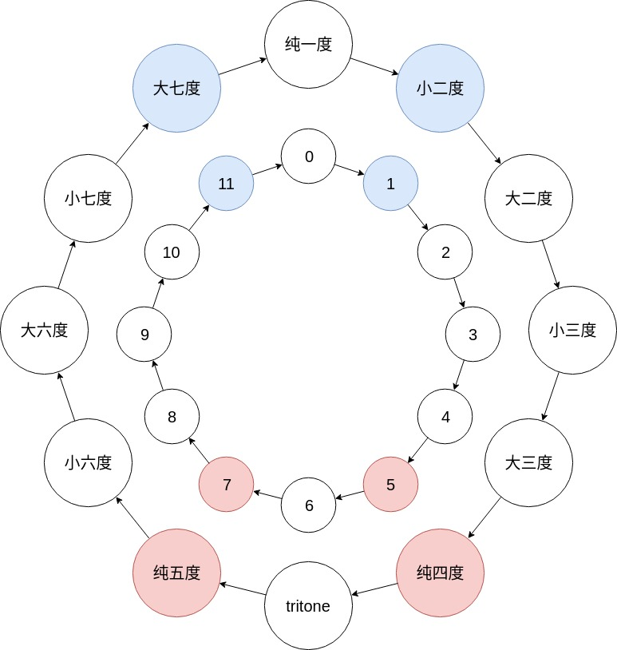

音乐中的群论之二 - 循环群与五度圈
在调性音乐中，五度圈是最为基本的一个概念之一。我们最开始接触五度圈就是在认识调号的时候：不论升降，每增加一个调号，新的调号都在五度之外。更准确地说：
- 降调对应下行五度：C - F - 降B - 降E …
- 升调对应上行五度：C - G - D - A …
既然音乐意义上五度圈如此重要，我们自然而然要问的就是：为什么？
我们可以从数学的角度来解答这个问题。
从上一篇文章“用python告诉你为什么十二平均律有12个音”中我们了解到，一个八度中有12个音。
我们可以将一个八度的12个音看做一个时钟，然后我们就有了如下的音程表：
- 纯一度 = 0
- 小二度 = 1
- 大二度 = 2
- 小三度 = 3
- 。。。
- 大七度 = 11

其中，五度圈对应的纯五度对应的是7。
数学部分
现在开始数学部分。
八度跟时钟一样，一个特点就是每隔12步就会回到原点，也就是说：
这被称为模运算(modular arithmetic)，其背后的原理就是小学学的余数。也就是说，我们可以将12音组成的八度看做一个$n=12$的整数模。
从群论的角度来说，整数模是循环群(cyclic group)的一个例子。
循环群的特点就是我们可以找到被称作“生成器”(generator)的元素，生成器可以靠一己之力生成整个群。
举个例子，回到我们$n=12$的整数模，我们有12个元素：
其中，1就是一个最明显的生成器：
- 1生成1
- 1+1生成2
- 1+1+1生成3
- 。。。以此类推
并不是每个数都是生成器。作为反例，我们可以考虑6这个数：
- 6生成6
- 6+6生成12，也就是0
- 0+6生成6
我们会发现，6能生成的元素只有2个：0和6，而其他的数比如7，则“鞭长莫及”。
一个很自然的问题就是：是否存在另外的生成器？
答案就是今天的话题：五度圈就是另外的一个生成器。也就是说，7是$n=12$的整数模的生成器之一。
为什么是这样？这里我们要用到群论中的一个定理：假设$a$是一个大小为$n$的循环群的生成器，那么$a^k$是生成器当且仅当$k$跟$n$互质（$k,n$互质指的就是最大公约数为1，$\gcd(k,n) = 1$）。详细的证明请参见文末的引用。
在上文中，$a^k$的意思是：
因为我们面对的是一个加法群，其中的二元运算$\ast$其实就是加号$+$。所以在本文中，$a^k$并不是我们所熟悉的“次方”的概念，而应该是“乘法”。上文的定理翻译到$\mathbb Z_{12}$的加法群上则是：
假设$a$是$\mathbb Z_{12}$的生成器，那么$a\times k$是生成器当且仅当$k$跟$n$互质。
上面我们说过，1是一个显而易见的生成器，那么另外的生成器则是所有的$1 \times k = k$，且$k$跟$12$互质。简而言之就是找出所有跟12互质的数。
这样子就简单了。所有跟12互质的数总共也就下面几个：
- 1：小二度
- 5：纯四度
- 7：纯五度
- 11：大七度
而乐理的附加性质告诉我们，小二度跟大七度没有区别，纯四度跟纯五度没有区别（互为转位）。
回到音乐
翻译回音乐中，我们找到了一个很明显却往往不会意识到的特性：用五度圈，我们可以覆盖到所有12个音。
这个音乐的特性非常重要：其他的音程，例如增四度，不论是向上还是向下，走两步就回到了原点，无法“生成”所有的12个音。
这就是五度圈的数学本质：12音平均律是一个循环群，而五度圈有能力生成一整个群。这一性质在数学中其他地方也随处可见，比如线性代数中的“最小生成集合”（minimal spanning set）。
参考
- https://proofwiki.org/wiki/Power_of_Generator_of_Cyclic_Group_is_Generator_iff_Power_is_Coprime_with_Order